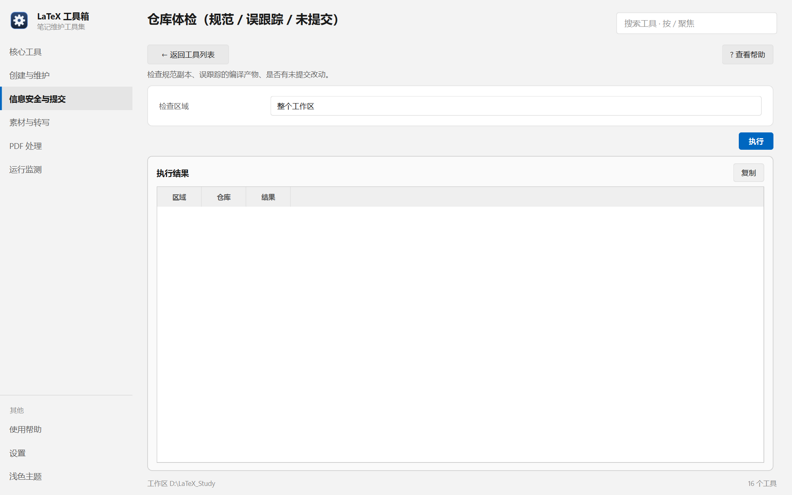

帮助目录 · 信息安全与提交
一次看完：规范副本是否一致、有没有误跟踪编译产物、哪些仓库还有未提交改动。
| 面板入口 | 信息安全与提交 → 卡片「仓库体检」→ 选区域 → 执行 |
|---|---|
| 命令行 | python tools/repo_check/repo_check.py |

每个仓库一行，「结果」列写明通过还是具体问题。
项目规范.md 与原件不一致。| 项 | 说明 |
|---|---|
| 检查区域 | 整个工作区 / LaTeX_Notes / Template / Tools。 |
python tools/repo_check/repo_check.py --area all
| 内容 | 位置 |
|---|---|
| 读的东西 | 各仓库的 git status、git ls-files 与规范副本 |
| 不写任何文件 | 纯只读检查 |
Q：提示「误跟踪编译产物」怎么办？
A：用 git rm --cached 把它们移出版本控制，并确认 .gitignore 覆盖了这些扩展名。工具只报警，不会自己改索引。
Q：「规范副本不一致」是指哪份文件？
A：项目规范.md。原件在工作区根，副本在若干仓库里。用工具 14 同步，方向恒为原件 → 副本。
Q：中文文件名的仓库被跳过了？
A：旧版本有 core.quotepath 的坑，已修。若仍跳过，检查仓库是否是合法 git 仓库。
Q：为什么 Tools 自己也列出来了？
A：它就是一个仓库。检查它没问题；但注意它的规范副本也可能不一致。